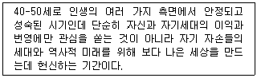
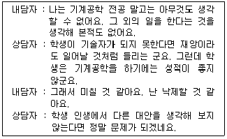
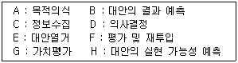
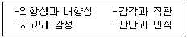
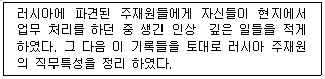
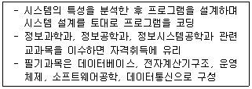
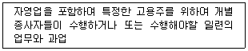
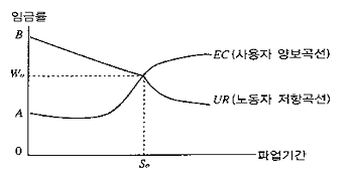
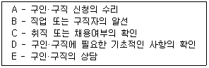

직업상담사-2급(구) (2009-05-10 기출문제)
1과목: 직업상담ㆍ심리학
1. 검사 해석 시 주의사항에 해당하지 않는 것은?
- 해석에 대한 내담자의 반응을 고려해야 한다.
- 검사결과에 대해 여러 정보에 근거한 주관적인 견해를 설명해 준다.
- 검사결과에 대해 내담자가 이해하기 쉬운 언어를 사용한다.
- 검사결과에 대한내담자의 방어를 최소화하도록 한다.
(정답률: 85%)

2. 내담자 중심 직업상담기법을 사용할 때 상담자가 갖추어야 할 기본적인 태도에 해당하지 않는 것은?
- 일치성/진실성
- 공감적 이해
- 무조건적 긍정적 수용
- 소망-방어체계의 이해
(정답률: 80%)
3. 직업 상담에서 내담자가 ”삶에서 무엇을 지향할 것인가에 관하여 가지고 있는 생각” 을 무엇이라고 하는가?
- 동기 및 역할
- 욕구
- 흥미
- 가치
(정답률: 65%)
4. 다음 중 행동수정 방법에 대한 설명으로 틀린 것은?
- 정적강화의 효과를 높이려면 내담자가 바람직한 한 행동을 할 때 즉각적으로 강화해 주어야 한다.
- 부적강화는 내담자가 어떤 행동을 할 때 혐오적인 성질을 띤 부적강화물을 제공하는 것을 말한다.
- 내담자가 한 번도 해 본적이 없는 새로운 행동을 가르치는 데에는 행동형성(shaping, 조성)의 방법이 효과적 이다 .
- 어떤 행동을 유지시키기 위해서는 일반적으로 연속 강화보다 부분강화(간헐강화)가 더 많이 사용된다.
(정답률: 62%)
5. 에릭슨(Erikson)의 심리사회성 발달이론 중 다음과 같은 현상이 나타나는 시기는?

- 친밀감(intimacy) -고립감(isolation)
- 근면성(industry) -열등감(inferiority)
- 생성감(generativity) -침체감(stagnation)
- 자아정체감(ego-identity) -역할혼란(role confusion)
(정답률: 86%)
6. 생애진로사정에 관한 설명으로 틀린 것은?
- 내담자에 관한 가장 초보적인 직업 상담 정보를 얻는 질적인(qualitative) 절차이다.
- 내담자 자신의 가치와 자기 인식에 대한 정보를 제공 한다.
- 내담자자신의 기술과 능력에 대한 자기평가를 방지 한다.
- 내담자의 직업 경험과 교육수준을 나타내는 객관적 사실을 알려준다.
(정답률: 70%)
7. 다음 중 의사결정의 촉진을 위한 ”6개의 생각하는 모자 (six thinking hats)” 기법의 모자 색상별 역할에 관한 설명으로 옳은 것은?
- 청색-낙관적이며, 모든 일이 잘 될 것이라고 생각한다.
- 백색-본인과 직업들에 대한사실들만을 고려한다.
- 흑색 -직관에 의존하고, 직감에 따라 행동한다.
- 황색-새로운 대안들을 찾으려 노력하고, 문제들을 다른 각도에서 바라본다.
(정답률: 77%)
8. 다음 면담에서 인지적 명확성이부족한 내담자의 유형중 상담자의 개입방법이 올바르게 짝지워진 것은?

- 앙면적사고 - 역설적사고(증상을 기술한다)
- 파행적 의사소통 - 저항에 다시 초점 맞추기
- 강박적 사고 - RET 기법
- 원인과 결과 착오 - 논리적 분석
(정답률: 54%)
9. 정신분석적 상담에서 내담자의 갈등과 방어를 탐색하고 이를 해석해 나가는 과정으로서 상당의 주된 과정에 해당 되는 것은?
- 논박과정
- 훈습과정
- 행동 수정과정
- 관계 형성과정
(정답률: 79%)
10. 작업 동기를 설명하는 강화이론의 주장이 아닌 것은?
- 사람이 일을 하는 것은 보상이 뒤따르기 때문이다
- 모든 사람에게 똑같이 보상을 할 때 작업 동기가 커진다.
- 보상이 지연되면 작업 동기가 줄어든다.
- 간헐적인 보상을 주면 작업 동기가 계속 유지된다.
(정답률: 80%)
11. 상담기법 중 내담자가 전달하는 이야기의 표면적 의미를 상담자가 다른 말로 바꾸어서 말하는 것을 무엇이라고 하는가?
- 탐색적 질문
- 요약과 재진술
- 명료화
- 적극적 경청
(정답률: 88%)
12. 직업 상담을 위한 면담에 대한 설명으로 옳은 것은?
- 내담자의 모든 행동은 이유와 목적이 있음을 분명하게 인지한다.
- 상담과정의 원만한 전개를 위해 내담자에게 태도변화를 요구한다.
- 침묵에 빠지지 않도록 상담자는 항상 먼저 이야기를 해야 한다.
- 초기면담에서 내담자에 대한 기준을 부여한다.
(정답률: 77%)
13. 진로시간전망 검사 중 코틀(Cott|e)이 제시한 원형검사 에서 원의 크기가 나타내는 것은?
- 과거, 현재, 미래
- 방향성, 변별성, 통합성
- 시간차원에 대한 상대적 친밀감
- 시간차원의 연결 구조
(정답률: 79%)
14. 다음 중 교류분석(transactional analysis:TA)에서 주로 사용되는 개념은?
- 집단무의식
- 자아상태(어버이-어른-어린이)
- 전경과 배경
- 비합리적 신념
(정답률: 75%)
15. 정신역동적 직업상담에서 보딘(Bordin)이 제시한 상담에 사용할 수 있는 상담자의 반응범주가 아닌 것은?
- 비교
- .명료화
- 소망-방어체계에 대한 해석
- 감정에 대한 준지시적 반응범주
(정답률: 86%)
16. 직업상담사가 지켜야 할 윤리강령에 해당되지 않는 것은?
- 내담자에 관한 정보를 교육과 연구를 위해 임의로 적극 활용한다.
- 내담자를 보다 효율적으로 도울 수 있는 방법을 꾸준히 연구 개발한다.
- 내담자와의 협의 하에 상담관계의 형식, 방법, 목적을 설정하고 토의한다.
- 자신이 좋아하는 전문직의 바람직한 이익을 위하여 최선을 다한다.
(정답률: 72%)
17. 직업과 개인을 연결시키는데 초점을 둔 개인차 심리학의 전통에 따르는 특성-요인 직업 상담에서는 면담을 매우 중요시한다. 이 접근법에서 강조하는 효과적인 면담기법으로 적절한 것은?
- 가능한 제한된 폐쇄형 질문을사용해서 면담의 초점을 좁혀야 한다.
- 상담자는 말을 많이 해서 내담자가 충분한 자기 탐색을 하도록 정보를 제공한다.
- 내담자가 침묵할 때는 섣불리 말하지 말고 침묵의 의미를 이해한 후 말을 꺼낸다.
- 문제해결 능력이 없는 내담자가 말을 많이 하는 것은 상당과정을 산만하게 하므로 가급적 발언을 억제한다.
(정답률: 77%)
18. 직업상담의 문제 유형을 크게 3가지로 대별할 때 적절하지 않은 것은?
- 취업상담
- 인성상당
- 진학상담
- 직업적응상당
(정답률: 72%)
19. 직업상담사의 역할과 가장 거리가 먼 것은?
- 직업정보의 수집 및 분석
- 직업관련 이론의 개발 및 강의
- 직업관련 심리검사의 실시 및 해석
- 구인, 구직, 직업적응, 경력개발 등 직업관련 상담
(정답률: 77%)
20. 직업상담 프로그램에서 다루어야 하는 내용과 가장 거리가 먼 것은?
- 자신에 대해 탐구하기
- 학업성취도 이해하기
- 직업세계 이해하기
- 미래사회 이해하기
(정답률: 67%)
21. 검사의 신뢰도 중의 하나인 알파값(cronbach a)이 크다는 것이 나타내는 의미는?
- 검사 문항들이 동질적이라는 것을 나타낸다.
- 검사의 예언력이 높다는 것을 의미한다.
- 시간이 흐르더라도 검사 점수가 변하지 않는다는 것을 의미한다.
- 검시의 채점 과정을 신뢰할 수 있다는 것을 나타낸다.
(정답률: 70%)
22. 개인의 직업선택에 미치는 요인들은 내부요인과 외부요인 으로 구분할 때 내부요인에 해당되지 않는 것은?
- 개인 정보적 요인
- 성별 등의 일반적 요인
- 개인 심리적 요인
- 개인 사회적 요인
(정답률: 54%)
23. 다음 중 스트레스 상황에 대처하는 행동으로 적합하지 않은 것은 ?
- 친구를 만나 실컷 수다를 떤다.
- 이불을 뒤집어쓰고 잠을 자버린다.
- 정해진 시간을 꼭 지키려 애쓴다.
- 현실을 직시하고 타협이나 앙보를 한다.
(정답률: 87%)
24. Maslow가 제시한 자기실현한 사람의 특징이 아닌 것은?
- 부정적인 감정 표현을 억제한다.
- 현실을 왜곡하지 않고 객관적으로 지각한다.
- 자신이 하는 일에 몰두 하고 만족스러워 한다.
- 즐거움과 아름다움을 느낄 수 있는 감상능력이 있다.
(정답률: 74%)
25. Gelatt가 제시한 의사결정과정이 바르게 나열된 것은?

- A→ C → E → B → H → G → D → F
- A→ E → C → B → H → G → D → F
- A→ C → E → G → B → H → D → F
- A→ C → E → B → G → H → D → F
(정답률: 70%)
26. 산업 장면에서 실시하는 심리검사에 관한 설명으로 틀린 것은 ?
- 배치 및 분류목적으로 심리검사를 사용하려면 각 배치에 대한 검사의 차별적 타당도가 확립되어 있어야 한다.
- 인사 결정을 위해 사용되는 검사의 내용 타당도를 입증하려면 검사내용이 직무내용과 밀접한 관계가 있음을 보여주어야 한다.
- 장애인의 경우, 검사 실시의 표준 절차를 벗어날 수 있다.
- 특정 검사가 직무 수행의 성공과 밀접한 관련성이 있음이 입증되었다면, 그 검사는 신뢰도가 확립된 검사이다
(정답률: 37%)
27. 다음 중 공간지각 적성검사에서 철수의 백분위(%)가 56일 때 그 의미로 가징 적절한 것은?
- 철수는 그 검사를 본 56명의 학생보다 높은 점수를 얻었다.
- 철수는 그 검사를 본 사람들 중 56번째이다.
- 철수의 점수는 그 검사를 본 사람들의 56%보다 높다.
- 철수의 점수는 평균점수보다 6점 높다.
(정답률: 65%)
28. 다음 중 A유형의 행동특징에 대한 설영으로 틀린 것은?
- 근무시간을 철저하게 지키고, 항상 긴박감을 느낀다.
- 평소 활동이 공격적이고 적대적이며, 참을성이 없다.
- 시간에 대하여 걱정을 덜 하고, 여유를 가진다.
- 사내의 활동이 경쟁적이며, 승부에 집착한다.
(정답률: 82%)
29. 직무를 수행하는데 요구되는 작업자의 지식, 기술, 능력 등에 관한 인적요건들을 알려 주기 때문에 선발이나 교육과 같은 인적 자원관리에 활용되는 것은?
- 직무기술서
- 작업자기술서
- 작업표준서
- 직무명세서
(정답률: 71%)
30. 내담자의 직업능력을 파악하기 위해서 검사 도구를 사용 하고자 할 때 가장 먼저 해야 할 일은?
- 대담자의 요구에 충족하는 검사가 개발되어 있는지 조사한다.
- 검사를 하고자 하는 내담자의 목적을 탐색한다.
- 해당 검 사도구의 심리 측정적 속성을 검토한다.
- 검사의 선택에 내담자를 포함시킨다.
(정답률: 74%)
31. Gott fredson이 제시한 직업포부의 발달단계가 아닌 것은?
- 성역할 지향성
- 힘과 크기 지향성
- 사회적 가치 지향성
- 직업 지향성
(정답률: 79%)
32. 다음 중 실업자를 위한 실업 관련 프로그램과 거리가 먼 것은 ?
- 직업전환 프로그램
- 인사고과프로그램
- 실업충격 완화 프로그램
- 직업 복귀 훈련프로그램
(정답률: 88%)
33. 성격의 5요인 이론(b i g f|Ve 모형)에서 제시하는 성격의 기본 차원이 아닌 것은?
- 외향성
- 경험에 대한 개방성
- 호감성
- 진취성
(정답률: 79%)
34. Holland가 제시한 직업선택을 위한 매칭이론의 사람의 성격과 바람직한 직업적성을 바르게 연결한 것은?
- 현실적인(rea|istic) 유형 - 비행기조종사
- 탐구적(investigatlve) 유형 - 종교지도자
- 보수인습적(conventiona|) 유형 - 정치가
- 사회적(socia|) 유형 - 작고가, 연주가, 배우 등
(정답률: 79%)
35. 다음은 어떤 검사의 내용을 다룬 것인가?

- GATB
- VPT
- CPl
- MBTl
(정답률: 84%)
36. 스트레스에 관한 설명으로 옳은 것은?
- 스트레스에 대한 일반적응증후는 경계, 저항, 탈진 단계로 진행된다.
- 1년간 생활변동단위(life change unit)의 합이 90인 사람은 대단히 심한 스트레스를 겪는 사람이다.
- A유형의 사람은 B유형의 사람보다 훨씬 느긋하고 덜 적대적이어서 상대적으로 스트레스에 인내력이 있다.
- 스트레스의 대처와 극복에 미치는 사회적 지지의 영향력은 거의 없다.
(정답률: 82%)
37. 다음 설명과 같은 직무분석 방법은?

- 결정적 사건법
- 작업일지법
- 작업자 중심법
- 관찰법
(정답률: 83%)
38. 경력 개발을 위한 교육훈련 을 실 시 할 때 가장 먼저 고려해야 하는 사항은?
- 사용가능한 훈련방법에는 어떤 것들이 있는지에 대한 고찰
- 현 시점에서 어떤 훈련이 필요한지에 대한 요구분석
- 훈련프로그램의 효과가 어떻게 나타났는지를 평가하기 위한 평가계획 수립 위한 평가계획 수립
- 훈련방법에 따른 구체적인 훈련프로그램 개발
(정답률: 72%)
39. 진로발달에 관한 Holland의 이론이 기초하고 있는 4가지 가정에 포함되지 않는 것은?
- 사람들의 성격은6가지 유형 중의 하나로 분류될 수 있다·
- 직업 환경은 6가지 유형의 하나로 분류될 수 있다.
- 개인의 행동은 성격에 의해 결정된다.
- 사람들은 자신의 능력을 발휘하고 태도와 가치를 표현 할 수 있는 환경을 찾는다.
(정답률: 87%)
40. 다음 중 검사의 구성타당도 분석방법으로 적합하지 않은 것은?
- 실험을 통한 집단 간 차이검증
- 유사한 특성을 측정하는 기존 검사와의 상관계수 분석
- 확인적 요인분석
- 기대표 작성
(정답률: 75%)
2과목: 직업정보론(노동시장론 포함)
41. 다음 고용안정 사업 중 성격이 다른 하나는?
- 휴업지원금
- 휴직지원금
- 재고용장려금
- 육아휴직장려금
(정답률: 54%)
42. 서비스분야 국가기술자격 종목별 응시자격으로 틀린 것은?
- 컨벤션기획사1급 - 대학졸업자 등으로서 졸업 후 응시 하고자 하는 종목이 속하는 동일직무 분야에서 5년 이상 실무에 종사한 자
- 소비자전문상담사1급 - 소비자상담관련실무경력5년 이상인 자
- 임상심리사2급 - 일상심리와 관련하여 1년 이상실습 수련을 받은 자 또는 2년 이상 실무에 종사한 자로서 대학졸업자 및 그 졸업 예정자
- 스포츠경영 관리사 - 대학졸업자
(정답률: 54%)
43. 다음 직업정보의 종류 중 민간직업정보의 특성에 관한 설명으로 옳은 것은?
- 특정시기에 국한되지 않고 지속적으로 제공된다.
- 특정한 목적에 맞게 해당분야 및 직종을 제한적으로 선택할 수 있다.
- 무료로 제공 된다
- 다른 정보에 미치는 영향이 크며 관련성이 높다.
(정답률: 65%)
44. 직업정보 분석 시 유의점으로 틀린 것은?
- 동일한 정보에 대해서는 한 가지 측면으로 분석한다.
- 전문적인 시각에서 분석한다.
- 분석과 해석은 원자료의 생산일, 자료모집방법 등을 검토하여야 한다.
- 직업정보원과 제공원에 대해 제시한다.
(정답률: 62%)
45. 직업능력개발훈련사업 중 실업자에 대한 훈련에 관한 설명으로 틀린 것은?
- 실업자재취직훈련의 재원은 사업주가 납입하는 직업능력개발사업 보험료이다.
- 실업자취업훈련의 재원은 정부일반회계이다.
- 정부위탁훈련의 훈련기관은 대한상공회의소 및 민간 직업 훈련 기관 이다 .
- 고용촉진훈련의 훈련기관은 대학 ·전문대학 및 노동부 장관이 지정하는 기관이다.
(정답률: 24%)
46. 직업능력개발훈련의 체계 중 훈련방법에 따른 구분이 아닌 것은?
- 집체훈련
- 향상훈련
- 현장훈련
- 통신혼련
(정답률: 47%)
47. 한국고용직업분류(KECO)에 대한 설명으로 틀린 것은?
- 1O진법 중심의 분류이다.
- 직능유형(skill type) 중심이다.
- 대분류보다는 중분류 중심체계이다.
- 대규모 조사를 통한 경험적 데이터에 근거하고 있다.
(정답률: 42%)
48. 다음은 어떤 국가기술자격정보에 관한 설명인가?

- 무선설비기사
- 정보처리기사
- 사무자동화산업기사
- 전자계산기기능사
(정답률: 63%)
49. 산업 ·직업별 고용구조조사에 관한 설명으로 틀린 것은?
- 국가적 인적자원수급정책을 위한 기본통계로 활용 된다 .
- 산업 소분류(228개)와 직업 세분류(426개)수준에서의 고용구조를 파악한다.
- 직업별 고용전망, 진로선택 직업훈련, 취업알선 등 노동시장 정책과 연구를 위한 기초자료로 활용된다.
- 대한민국에 거주하는 만 18세 이상의 인구 중 취업 상태에 있는 사람을 대상으로 하는 전국 단위의 조사이다.
(정답률: 54%)
50. 다음 중 한국직업사전(2009)에서 알 수 없는 자료는?
- 해당직업이 주로 존재하는 산업명, 해당 직무를 수행 하는데 필요한 일반적인 지식 정도
- 유사직업명, 작업장소의 환경과 제약조건
- 수행하는 직무기술 수행하는 작업에 필요한 힘의 강도 및 신체적 제반동작
- 노동시간, 해당직무를 수행하는데 필요한 직무지식
(정답률: 54%)
51. 한국표준산업분류(2008)의 산업결정방법에 관한 설명으로 틀린 것은?
- 생산단위의 산업 활동은 그 생산단위가 수행하는 주된 산업 활동의 종류에 따라 결정된다.
- 계절에 따라 정기적으로 산업을 달리하는 사업체의 경우에는 조사시점의 경영하는 산업에 의해 결정된다.
- 휴업 또는 자산을 청산중인 사업체의 산업은 영업 중 또는 청산을 시작하기전의 산업 활동에 의해 결정된다.
- 설립중인 사업체의 산업은 개시하는 산업 활동에 따라 결정한다.
(정답률: 69%)
52. 한국표준직업분류(2007)에서 다음이 의미하는 것은?

- 직군
- 직렬
- 직업
- 직무
(정답률: 65%)
53. 근로자능력개발카드에 대한 설명으로 틀린 것은?
- 외국어과정의 학급당 정원은 30명 이내로 한다.
- 근로자능력개발카드의 유효기간은 발급일로부터 1년으로 하되 월단위로 계산한다.
- 훈련과정에 대한 중복수강은 훈련과정의 수강시간이 다른 경우 3개의 훈련과정까지 가능하다.
- 지원대상자 적격 여부 판단은 능력개발카드 신청일로 하되 노동부가 지원하는 실업자훈련 등을 받고 있지 않아야 한다.
(정답률: 29%)
54. 직업선택 결정모형을 기술적 직업결정모형과 처방적 직업 결정모형으로 분류할 때 기술적 직업결정모형에 해당하는 것은?
- 브룸의 모형
- 플레처의 모형
- 겔라트의 모형
- 타이드먼과 오하라의 모형
(정답률: 50%)
55. 직업정보시스템의 정보관리 순서로 적절한 것은?
- 수집 - 분석 - 가공 - 체계화 -제공 - 평가
- 수집 - 가공 - 분석 - 제공 - 평가 - 체계화
- 수집 - 문석 - 평가 - 가공 - 체계화 - 제공
- 수집 - 분석 - 체계화 - 제공 - 가공 - 평가
(정답률: 59%)
56. 한국직업사전(2009)에 수록된 용어설명으로 틀린 것은?
- 자료-자료와 관련된 기능은 만질 수 없으며 숫자, 단어, 기호, 생각, 개념 그리고 구두상 표현을 포함한다.
- 육체활동-해당 직업의 직무를 수행하기위해 필요한 신체적 능력을 나타내는 것으로 균형감각, 웅크림, 손, 언어력, 청각, 시각 등이 요구되는 육체활동인지 여부를 나타낸다.
- 작업강도-해당직업의 직무를 수행하는데 필요한 육체적 힘의 강도를 나타낸 것으로 심리적, 정신적 노동 강도를 포함한다.
- 유사명칭-본 직업을 명칭만 다르게 부르는 것으로 본직업과 사실상 동일하다.
(정답률: 54%)
57. 한국표준산업분류(2008)의 산업분류의 적용원칙에 관한 설명으로 틀린 것은?
- 생산단위는 산출물뿐만 아니 라 투입물과 생산 공정 등을 고려하여 그들의 활동을 가장 정확하게 설명된 항목에 분류해야 한다.
- 복합적인 활동단위는 우선적으로 최상급 분류단계 (대분류)를 정확히 결정하고, 순차적으로 중, 소, 세, 세세분류 단계 항목을 결정하여야 한다.
- 수수료 또는 계약에 의하여 활동을 수행하는 단위는 자기계정과 자기책임 하에서 생산하는 단위와 다른 항목에 분류되어야 한다.
- “공공행정 및 국방, 사회보장사무“ 이외의 다른 산업 활동을 수행하는 정부기관은 그 활동의 성질에 따라 분류하여야 한다.
(정답률: 65%)
58. 워크넷 구인 ·구직 및 취업 동향을 분석할 때 사용하는 용어에 관한 설명으로 틀린 것은?
- 취업건수 : 금월 기간에 워크넷에 취업 등록된 수
- 구인배수 : 신규구인인원÷신규구직자수
- 의중임금충족률 : (의중임금÷제시임금)x100
- 취업률 : (취업건수÷신규구직자 수) x 100
(정답률: 63%)
59. 워크넷에서 제공하는 청소년 직업흥미검사의 하위척도가 아닌 것은?
- 활동
- 자신감
- 직업
- 봉사
(정답률: 58%)
60. 한국직업정보시스템에서 제공하는 학과정보 중 공학계열에 해당하는 학과가 아닌 것은?
- 조경학과
- 생명공학과
- 메카트로닉스공학과
- 소프트웨어공학과
(정답률: 58%)
61. 다음은 힉스의 교섭모형과 기대파업기간에 대한 그림이다 이에 대한 설명으로 틀린 것은?

- 임금률 A점은 노동조합이 없거나 노동조합이 파업을 하기 이전 사용자들이 지불하려고 하는 임금수준이다.
- B점에서 우하향 곡선은 노동조합의 저항곡선이다.
- 만약노동조합이 W0째보다 더 높은 임금을 요구하면 사용자는 쉽게 수락하겠지만, 그때는 노동조합 내부에서 교섭대표자들과 일반조합원간의 마찰이 불가분하다 고 하였다.
- 힉스의 모형은 단체교섭과정에서의 불확실성을 지나치게 경시하였다는 비판을 받게 되었다.
(정답률: 58%)
62. 효율성임금정책이 높은 생산성을 가져오는 원인에 관한 설명으로 틀린 것은?
- 고임금은 노동자의 직장상실비용을 증대시켜서 작업 중에 태만하지 않게 한다.
- 고임금 지불 기업은 일반적으로 노동자에게 현장훈련 투자를 많이 한다.
- 고임금은 노동자의 기업에 대한 충성심과 귀속감을 증대시킨다.
- 고임금 지불 기업은 신규채용시 지원노동자의 평균 자질이 높아져 보다 양질의 노동자를 고용할 수 있다.
(정답률: 60%)
63. 여성의 경제활동참여율곡선은 M 자형이라고 한다. 즉, 여성의 경제활동 참여율을 수직축에, 그리고 나이를 수평 축에 잡아 표시해 보면 남성과 달리 30세 전후에서 낮아 졌다가 다시 상승하는 모습을 보인다. 이러한 여성의 경제 활동참여율의 나이에 따른 변화의 주된 원인은?
- 높아진 학력수준
- 높아진 소득수준
- 기업의 여성차별
- 결혼, 출산 및 육아
(정답률: 67%)
64. 보상요구임금(reservation wage)에 관한 설명으로 틀린 것은?
- 노동을 시장에 공급하기 위해노동자가 요구하는 최소한의 주관적 요구 일금수준이다.
- 의중일금 또는 눈높이 임금으로 불리운다.
- 시장에 참가하여 효용극대화를 달성하는 근로자의 의중임금은 실제임금과 일치한다.
- 전업주부의 의중임금은 실제임금보다 낮다.
(정답률: 58%)
65. 경기가 나빠져 노동의 수요가 줄어들었을 때 노동의 공급이 임금에 대해 탄력적이면 탄력적일수록 임금의 변화로 옳은 것은?
- 수요의 감소율에 비해 임금의 하락율이 작아진다.
- 수요의 감소율에 비해 임금의 하락율이 커진다.
- 수요의 감소율과임금의 하락율이 같아진다.
- 수요의 감소율과 임금의 하락율 사이에는 아무런 관계가 없다.
(정답률: 50%)
66. 기업 내부노동시장의 형성요인이 아닌 것은?
- 노동조합의 존재
- 기업 특수적 숙련기능
- 직장내 훈련
- 노동관련 관습
(정답률: 63%)
67. 최저임금제도의 기본취지 및 효과에 대한 설명으로 틀린 것은 ?
- 저임금 노동자의 생활보호
- 산업 평화의 유지
- 유효수요의 억제
- 산업간ㆍ직업 간 임금격차의 축소
(정답률: 50%)
68. 다음 중 사회정책이나 제도에 관한 설명으로 틀린 것은?
- 인력정책(manpower policy)은 주로 구조적실업 문제를 해결하기 위한 정책이다.
- 소득정책(incomes policy)은 근로자들의 소득을 증진시키기 위한 정책이다.
- 우리나라의 고용평등법은 남녀고용평등을 주된 목적으로 하고 있다.
- 알선은 노사 자율적 해결을 강조하는 노동쟁의조정제도이다.
(정답률: 54%)
69. 노동 수요측면에서 비정규직 증가의 원인과 가장 거리가 먼 것은?
- 세계화에 따른 기업 간 경쟁 환경의 변화
- 노동조합운동에 대한 기업의 대항
- 고학력 취업자의 증가
- 정규노동자 고용비용의 증가
(정답률: 60%)
70. 노동공급의 탄력성 값이 0인 경우 노동공급곡선의 형태는?
- 수평이다.
- 수직이다.
- 우상향이다.
- 후방굴절형이다.
(정답률: 63%)
71. 노동의 수요탄력성이 0.5 이고 다른 조건이 일정할 때 임금이 5% 상승한다면 고용량의 변화는?
- 0.5% 감소한다.
- 2.5%감소한다.
- 5%감소한다.
- 5.5%감소
(정답률: 47%)
72. 다음 중 1차 노동시장의 특성과 가장 거리가 먼 것은?
- 고용의 안정성
- 승진기회의 평등
- 자유로운 직업 간 이동 보장
- 고임금
(정답률: 47%)
73. 스캔론 플랜(scanlon plan)에 관한 설명으로 틀린 것은?
- 근로자경영참가 중에서 이익참가의 대표적 유형이다.
- 노사협력에 의한 생산성 향상을 목적으로 한다.
- 종업원 개개인의 능률을 자극하는 것이 아니라 집단적 능률을 자극하는 제도이다.
- 생산(부가)가치를 성과배분의 기준으로 삼는다.
(정답률: 47%)
74. 다음 중 직업탐색이론과 가장 관련이 없는 것은?
- 요구임금
- 기회비용
- 구조적 실업
- 불완전한 노동시장정보
(정답률: 50%)
75. 숙련 노동시장과 비숙련 노동시장이 완전히 단절되어 있다 고 할 때 비숙련 외국근로자의 유입에 따라 가장 큰 피해를 입는 집단은?
- 국내 소비자
- 국내 비숙련공
- 노동집약적 기업주
- 기술집약적 기업주
(정답률: 60%)
76. 정보의 유통 장애와 가장 관련이 높은 실업은?
- 마찰적 실업
- 경기적 실업
- 구조적 실업
- 잠재적 실업
(정답률: 65%)
77. 노동시간의 소득탄력성이란?
- 소득이 1원 증가할 때 노동시간의 변화랑
- 소득이 1원 증가할 때 노동시간의 변화율
- 소득이 1% 증가할 때 노동시간의 변화랑
- 소득이 1% 증가할 때 노동시간의 변화율
(정답률: 40%)
78. 다음 중 최저임금법이 근로자에게 유리하게 될 가능성이 높은 경우는?
- 노동시장이 수요독점 상태일 경우
- 최저임금과 한계요소비용이 일치할 경우
- 최저임금이 시장균형 임금수준보다 낮을 경우
- 노동시장이 완전경쟁상태일 경우
(정답률: 59%)
79. 임금의 경제적 기능에 대한 설명으로 틀린 것은?
- 임금결정에서 기업주는 동일노동. 동일임금을 선호하고 노동자는 동일노동, 차등임금을 선호한다.
- 기업주에게는 명목임금이 중요성을 가지나 노동자에게 는 실질임금이 중요하다.
- 기업주에서 본 임금과 노동자입장에서 본 임금의 성격상 상호배반적인 관계를 갖는다.
- 임금은 인적자본에 대한 투자수요결정의 변수로서 중요 한 역할을 한다.
(정답률: 67%)
80. 다음 중 고정급제 임금형태가 아닌 것은?
- 시급제
- 연봉제
- 성과급제
- 월급제
(정답률: 58%)
3과목: 노동관계법규
81. 고용보험법상 구직급여에 관한 설명으로 틀린 것은?
- 근로자의 중대한 귀책사유로 해고된 경우에는 구직급여의 수급자격이 제한될 수도 있다.
- 이직당시 1억 원 이상의 금품을 퇴직위로금으로 수령한 수급자격자에 대하여는 실업의 신고일부터 3월간 구직 급여의 지급이 유예될 수 있다.
- 수급자격자가 직업안정기관의 장이 소개하는 직업에 취직하는 것을 거부하거나 직업안정기관의 장이 지시한 직업능력개발훈련 등을 거부하는 경우에는 이미 지급한 구직급여를 환수한다.
- 거짓이나 기타 부정한 방법으로 구직급여를 지급받은 자에 대하여는 이미 지급한 구직급여의 반환을 명할 수 있으며, 그것이 사업주의 허위의 신고 ·보고 또는 증명에 의한 것인 경우에는 사업주도 연대책임을 진다.
(정답률: 50%)
82. 남녀고용평등과 일 ·가정 양립 지원에 관한 법률상 육아 휴직에 관한 설명으로 틀린 것은?
- 육아휴직기간은 1년 이내로 한다.
- 육아휴직기간은 근속기간에 포함되지 않는다.
- 생후 1년 미만 된 영유가 있는 근로자는 그 영유아의 양육을 위하여 육아휴직을 신청할 수 있다.
- 사업주는 육아휴직을 마친 후에는 휴직 전과 같은 업무 또는 같은 수준의 임금을 지급하는 직무에 복귀시켜야 한다.
(정답률: 50%)
83. 고용상 연령차별금지 및 고령자고용촉진에 관한 법률상 고령자 기준고용율에 관한 설명으로 옳은 것은?
- 기준고용률은 당해 사업장 상시 근로자수의 100분의 50이다 .
- 상시200인 이상의 근로자를 사용하는 사용주는 기준 고용률이 미달하는 경우 기준고용률 이행계획을 제출 하여야 한다.
- 사업주가 기준고용률을 초과하여 고령자를 추가로 고용하는 경우에는 조세감면 뿐만 아니라 고용지원금을 지원할 수 있다.
- 기준고용률은 사업장에서 상시 사용하는 근로자를 기준으로 하여 사업주가 고령자의 고용촉진을 위하여 고용하여야 할 고령자의 비율로서 고령자의 현황과 고용 실태 등을 고려하여 사업의 종류별로 노동부령으로 정하는 비율이다.
(정답률: 62%)
84. 근로기준법상 경영상 이유에 의한 해고에 관한 설명으로 옳은 것은?
- 근로자의 직접적인 귀책사유를 필요로 한다.
- 경영 악화를 방지하기 위한 사업의 양도 ·인수 ·합병은 긴박한 경영상의 필요가 있는 것으로 본다.
- 인원삭감의 필요성이 인정되면 해고회피 노력을 할 필요는 없다.
- 노동부장관에의 신고는 정리해고의 유효 요건 중의 하나이다.
(정답률: 60%)
85. 근로자직업능력 개발법상 재해위로금에 관한 설명으로 틀린 것은?
- 직업능력개발훈련을 받는 근로자가 직업능력개발훈련 중에 그 직업능력개발훈련으로 인하여 재해를 입은 경우에는 재해 위로금을 지급한다.
- 위탁에 의한 직업능력개발훈련을 받는 근로자에 대하여는 그 위탁자가 재해 위로금을 부담한다.
- 위탁받은 자의 훈련시설의 결함이나 그 밖에 위탁받은 자에게 책임이 있는 사유로 인하여 재해가 발생한 경우에는 위탁받은 자가 재해 위로금을 지급한다.
- 재해위로금의 산정기준이 되는 평균임금은 산업재해보상보험법에 따라 노동부장관이 매년 정하여 고시하는 최고보상기준금액을 상한으로 하고 최저 보상기준 금액은 적용하지 아니한다.
(정답률: 57%)
86. 직업안정법령상 직업정보제공사업자의 준수사항으로 틀린 것은 ?
- 구인자의 업체명 또는 성명이 표시되어 있지 아니한 구인광고를 게재하지 아니할 것
- 직업정보제공매체의 구인 ·구직의 광고에는 구인 ·구직자의 주소 또는 전화번호를 기재하지 아니할 것
- 구직자의 이력서 발송을 대행하거나 구직자에게 취업 추천서를 발부하지 아니할 것
- 최저임금에 미달되는 구인정보를 게재하지 아니할 것
(정답률: 63%)
87. 고용보험법상 취업촉진수당이 아닌 것은?
- 여성고용촉진장려금
- 광역 구직활동비
- 이주비
- 직업능력개발 수당
(정답률: 50%)
88. 고용보험법상 고용보험 피보험자격의 취득일ㆍ상실일에 관한 설명으로 옳은 것은?
- 고용보험의 적용제외 근로자이었던 자가 고용보험법의 적용을 받게 된 경우에는 그 적용을 받게 된 날의 다음 날에 피보험자격을 취득한 것으로 본다.
- 피보험자가 고용보험의적용제외근로자에 해당하게 된 경우에는 그 적용 제외 대상자가 된 날에 피보험 자격을 상실한다.
- 보험관계 성립일 전에 고용된 근로자의 경우에는 고용된 날에 피보험자격을 취득한 것으로 본다.
- 피보험자가 사망한 경우에는 사망한 날에 피보험자격을 상실한다.
(정답률: 47%)
89. 근로자직업능력 개발법상 훈련계약에 관한 설명으로 틀린 것은 ?
- 사업주와 직업능력개발훈련을 받으려는 근로자는 직업 능력개발훈련에 따른 권리·의무 등에 관하여 훈련 계약을 체결하여야 한다.
- 기준근로시간외의 훈련시간에 대하여는 생산시설을 이용하거나 근무 장소에서 하는 직업능력개발훈련의 경우를 제외하고는 연장근로와 야간근로에 해당하는 임금을 지급하지 아니할 수 있다.
- 훈련계약을 체결할 때에는 해당 직업능력개발훈련을 받는 사람이 직업능력개발훈련을 이수한 후에 사업주가 지정하는 업무에 일정 기간 종사하도록 할 수 있다. 이 경우 그 기간은 5년 이내로 하되, 직업능력개발훈련 기간의 3배를 초과할 수 없다.
- 훈련계약을 체결하지 아니한 경우에 고용근로자가 받은 직업능력개발훈련에 대하여는 그 근로자가 근로를 제공 한 것으로 본다.
(정답률: 43%)
90. 근로3권에 관한 설명으로 옳은 것은?
- 근로자는 근로조건의 향상을 위하여 자주적인 단결권, 단체교섭권, 단체행동권을 가진다.
- 공무원인 근로자도 원칙적으로 근로3권을 가지며, 공공복리를 위해 권리가 제약되는 경우가 있다.
- 주요방위산업체의 근로자는 국가안보를 위해 당연히 단체행동권이 인정되지 않는다.
- 미취업근로자 개개인에게 주어지는 구체적 권리이다.
(정답률: 67%)
91. 고용상 연령차별금지 및 고령자고용촉진에 관한 법률상 정년에 관한 설명으로 옳은 것은?
- 55세 이상이 되도록 노력하여야 한다.
- 사업주는 고령자인 정년퇴직자를 재고용할 경우에는 퇴직 직전의 임금으로 임금을 결정해야 한다.
- 사업주는 고령자인 정년퇴직자를 재고용할 경우에는 퇴직금과 연차유급휴가 일수 계산을 위한 계속근로기간 산정에 있어 종전의 근로기간을 제외할 수 있다.
- 노동부장관은 상시 100인 이상의 근로자를 사용하는 사업장의 사업주로서 정년을 현저히 낮게 정한 사업주에 대하여 정년연장에 관한 계획을 작성하여 제출할 것을 요청할 수 있다.
(정답률: 54%)
92. 다음 사용자의 조치 중 근로기준법을 위반한 것으로 볼 수 있는 것은?
- 근로자가 퇴직 후 경력증명서를 청구한 경우 근로자가 원하지 않는 사항을 기재하지 않는 것
- 근로자명부와 근로계약에 관한 중요한 서류를 3년이 지나서 파기하는 것
- 4주 동안을 평균하여 1주 동안의 소정근로시간이 15시간 미만인 근로자에 유급휴일을 부여하지 않는 것
- 대통령이 정하는 기준에 따라 노동부장관이 발급한 취직인허증을 소지하지 않은 15세 미만인 자를 채용 하는 것
(정답률: 47%)
93. 직업안정법상 용어의 정의가 틀린 것은?
- 유료직업소개사업이라 함은 무료직업소개소외의 직업소개사업을 말한다.
- 직업안정기관이라 함은 직업소개·직업지도 등 직업 안정업무를 수행하는 지방노동행정기관을 말한다.
- 무료직업소개사업이라 함은 수수료 ·회비 기타 일체의 금품을 받지 아니하고 행하는 직업소개사업을 말한다.
- 직업소개라 함은 구인 또는 구직의 신청을 받아 구인자와 구직자간에 고용계약의 성립을 결정하는 것을 말한다.
(정답률: 50%)
94. 고용상 연령차별금지 및 고령자고용촉진에 관한 법령상 준고령자의 연령으로 옳은 것은?
- 45세 이상 60세 미만
- 45세 이상 50세 미만
- 50세 이상 55세 미만
- 55세 이상 60세 미만
(정답률: 63%)
95. 근로기준법상 근로계약 체결 시 반드시 서면으로 명시해야 하는 근로조건은?
- 작업안전조치
- 취업 장소와 종사업무
- 임금의 지급방법
- 당사자의 인적사항
(정답률: 53%)
96. 남녀고용평등과 일 ·가정 양립 지원에 관한 법률상 임금에 관한 설명으로 옳은 것은?
- 사업주는 다른 사업내의 동일가치의 노동에 대하여는 동일한 임금을 지급하여야 한다.
- 임금차별을 목적으로 사업주에 의하여 설립된 열개의 사업은 별개의 사업으로 본다.
- 동일 가치 노동의 기준은 직무 수행에서 요구되는 성, 기술, 노력 등으로 한다.
- 사업주가 동일가치노동의 기준을 정할 때에는 노사협의회의 근로자를 대표하는 위원의 의견을 들어야 한다.
(정답률: 31%)
97. 직업안정법령상 직업안정기관의 직업소개 절차로 옳은 것은?

- A → D → B → E → C
- D → A → E → B → C
- E → D → B → A → C
- E → B → C → D → A
(정답률: 47%)
98. 근로기준법상 임금의 비상시 지급사유가 아닌 것은?
- 장남의 대학입학
- 장녀의 결혼
- 배우자의 교통사고
- 남편의 사망
(정답률: 54%)
99. 남녀고용평등과 일 ·가정 양립 지원에 관한 법률상 차별에 해당하지 않는 것은?
- 사업주가 근로자에게 성별, 혼인, 가족 안에서의 지위, 임신 또는 출산 등의 사유로 합리적인 이유 없이 채용 또는 근로의 조건을 다르게 하거나 그 밖의 불리한 조치를 하는 경우
- 사업주가 채용조건이나 근로조건은 동일하게 적용하더라도 그 조건을 충족할 수 있는 남성 또는 여성이 다른 한 성에 비하여 현저히 적고 그에 따라 특정 성에게 불리한 결과를 초래하며 그 조선이 정당한 것임을 증명할 수 없는 경우
- 사업주는 여성 근로자를 모집 ·채용할 때 그 직무의 수행에 필요하지 아니한 용모·키·체중 등의 신체적조건, 미혼 조건, 그 밖에 노동부령으로 정하는 조건을 제시하거나 요구하는 경우
- 현존하는 남녀 간의 고용차별을 없애거나 고용평등을 촉진하기 위하여 잠정적인 특정성을 우대하는 조치를 취하여 경우
(정답률: 47%)
100. 고용정책기본법상 대량고용변동의 신고 시 이직근로자 수에 포함되는 자는?
- 수습 사용된 날부터 3월 이내의 자
- 자기의 사정 또는 귀책사유로 이직하는 자
- 천재지변으로 인하여 사업의 계속이 불가능하게 되어 이직하는 자
- 3개월 미만의 기간을 정하여 고용된 자로서 6개월을 초과하여 계속 고용되고 있는 자
(정답률: 58%)